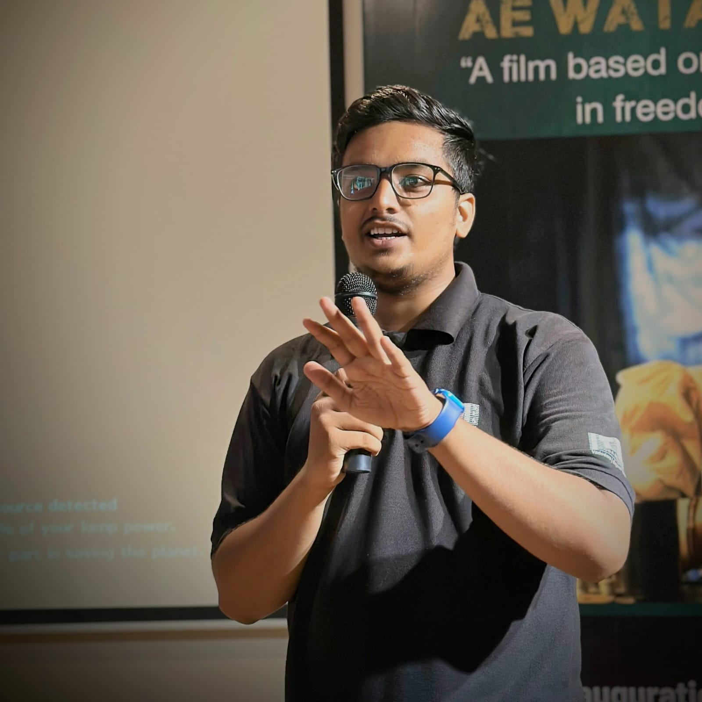

Welcome.

I'm Adnan Khan, an enthusiastic AI/ML and Cloud learner, active volunteer at AWS User Group Vadodara, and passionate about building impactful digital experiences.
I focus on building performant, accessible, and aesthetic systems across web and cloud technologies. My interests lie in AI, cloud architecture, and developer communities.
Roles:
-
AI/ML Enthusiast
Exploring machine learning models and real-world AI applications in healthcare and automation. -
Cloud Practitioner
Hands-on with AWS services, serverless computing, and scalable deployment architectures. -
Frontend Developer
Building responsive and intuitive user interfaces with modern web technologies like React and Tailwind CSS. -
Co-Founder at Techies-Edu
Co-leading a student-driven initiative to empower peers with tech education and project-based learning. -
Community Volunteer
Actively organizing, mentoring, and participating in developer events under AWS User Group Vadodara.